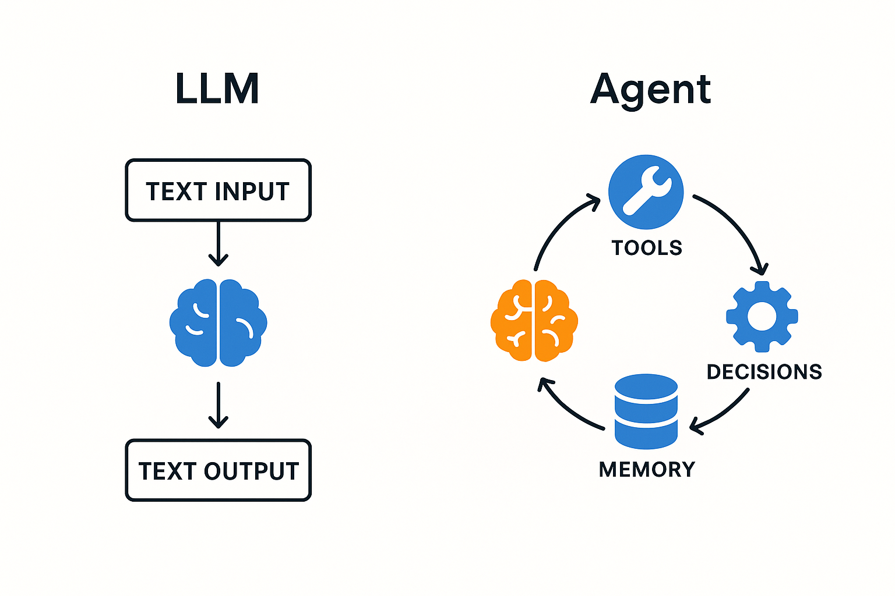
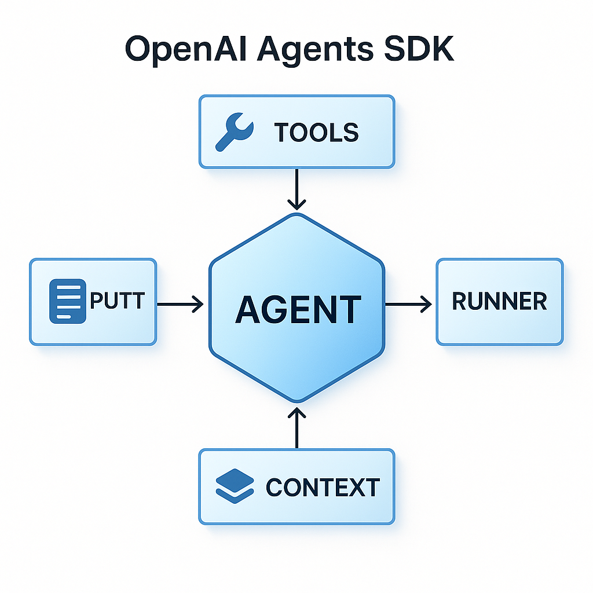
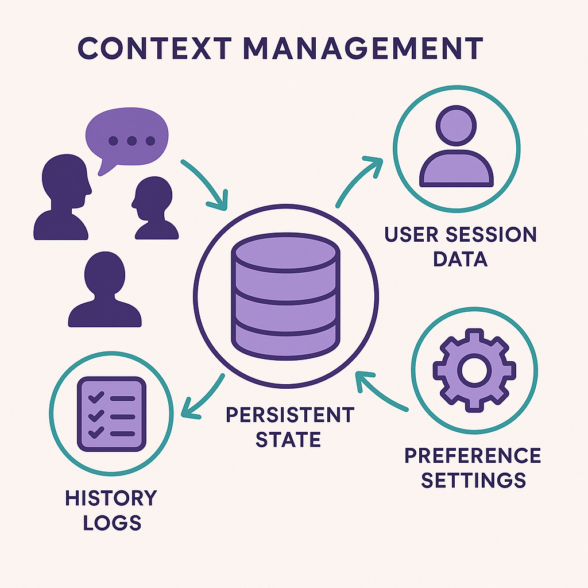
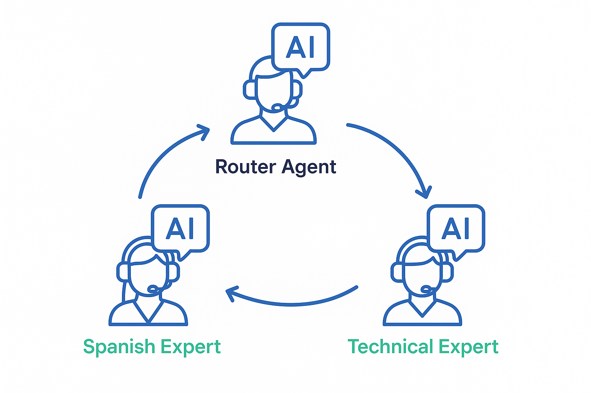
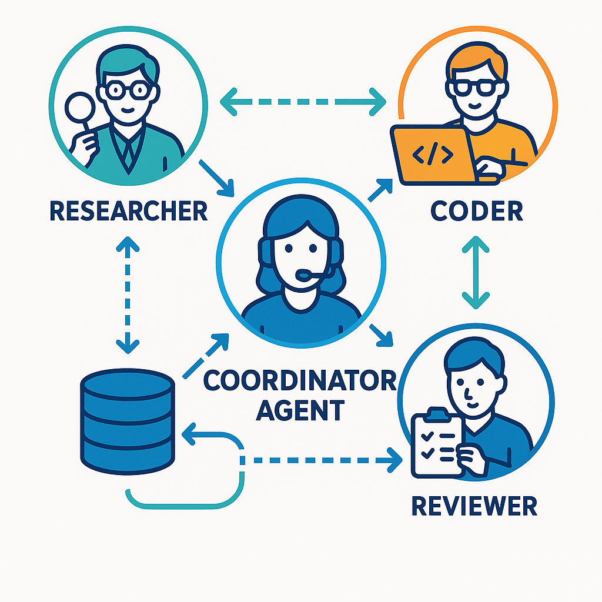
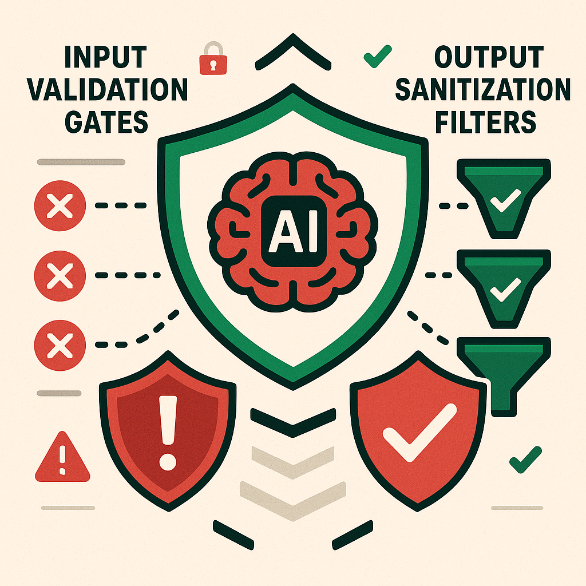
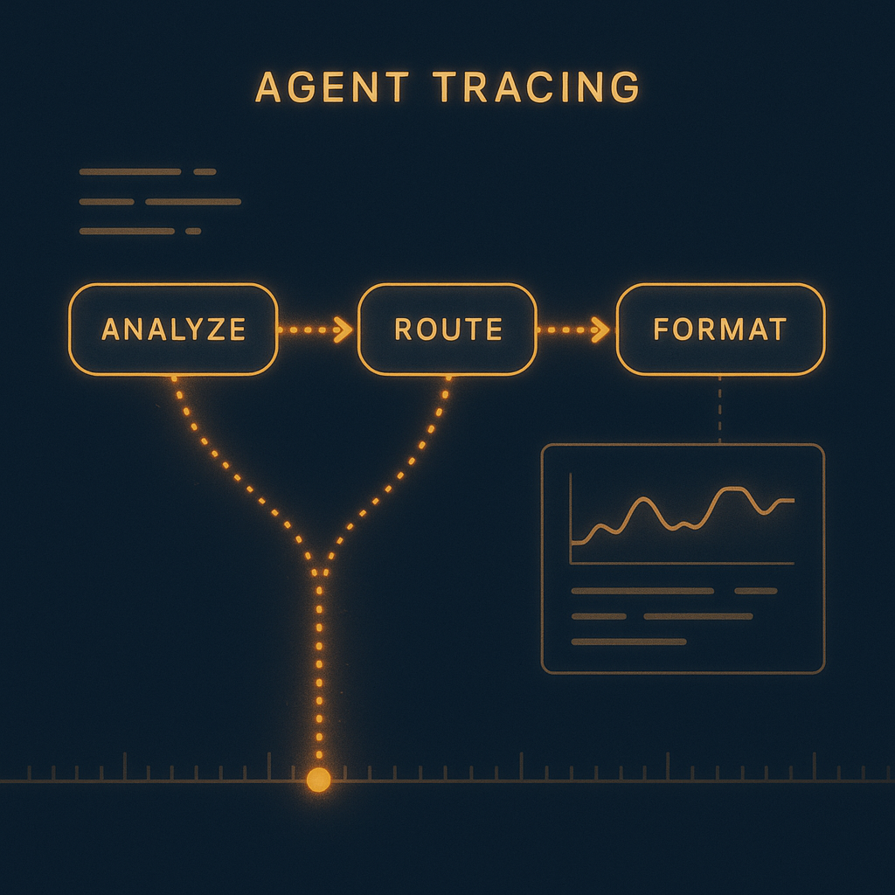
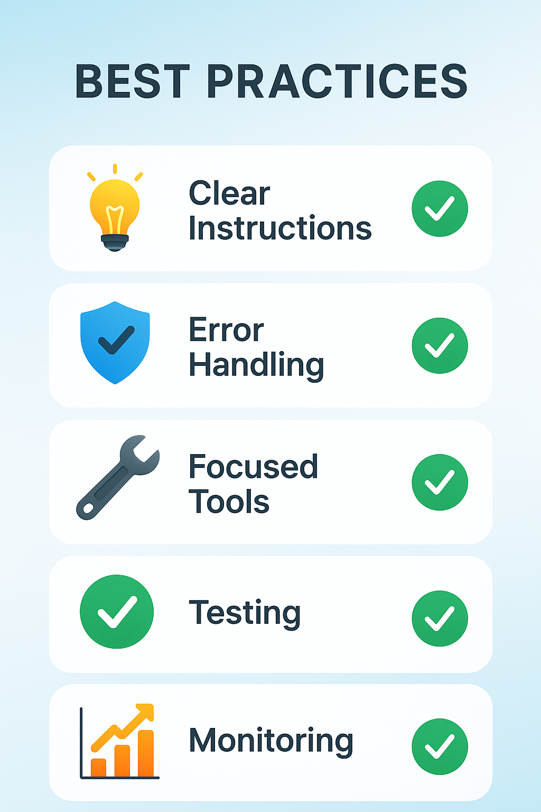
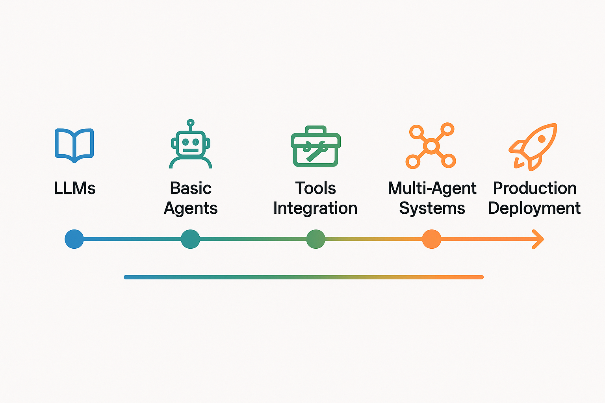

class: cover # Getting Started with<br>OpenAI Agents SDK <div class="brand-bar"> <span style="background: #E86B5A"></span> <span style="background: #F5C542"></span> <span style="background: #7CB56B"></span> <span style="background: #5B9BD5"></span> </div> ## Lucas Soares ### O'Reilly Live Training --- # Course Agenda <div style="display: flex; flex-wrap: wrap; gap: 12px; margin-top: 20px;"> <div style="display: flex; align-items: center; width: 48%; margin-bottom: 8px;"> <span class="num">1</span> <span><strong>From LLMs to Agents</strong></span> </div> <div style="display: flex; align-items: center; width: 48%; margin-bottom: 8px;"> <span class="num">2</span> <span><strong>The Agent Loop</strong></span> </div> <div style="display: flex; align-items: center; width: 48%; margin-bottom: 8px;"> <span class="num">3</span> <span><strong>Agents, Tools & Functions</strong></span> </div> <div style="display: flex; align-items: center; width: 48%; margin-bottom: 8px;"> <span class="num">4</span> <span><strong>Structured Output & Context</strong></span> </div> <div style="display: flex; align-items: center; width: 48%; margin-bottom: 8px;"> <span class="num">5</span> <span><strong>Multi-Agent Patterns & Handoffs</strong></span> </div> <div style="display: flex; align-items: center; width: 48%; margin-bottom: 8px;"> <span class="num">6</span> <span><strong>Guardrails, Sessions & Tracing</strong></span> </div> <div style="display: flex; align-items: center; width: 48%; margin-bottom: 8px;"> <span class="num">7</span> <span><strong>MCP (Model Context Protocol)</strong></span> </div> <div style="display: flex; align-items: center; width: 48%; margin-bottom: 8px;"> <span class="num">8</span> <span><strong>Capstone: Customer Service Agent</strong></span> </div> </div> .footnote[Notebooks 00 through 05 — sequential, hands-on progression] --- class: section # From LLMs to Agents ### Understanding the Evolution --- # LLMs vs Agents <div style="text-align: center; margin: 20px 0;"> <p></p> </div> .footnote[Source: [OpenAI Agents Documentation](https://openai.github.io/openai-agents-python/)] --- # Key Differences <div class="cols"> <div class="col"> ### LLMs: Text In → Text Out - Input text → Process → Output text - **Stateless** operations - No external interactions - Single turn completion </div> <div class="col"> ### Agents: Perceive → Decide → Act - Maintain **state** across interactions - Use **tools** to interact with the world - Make autonomous **decisions** - Execute multi-step **workflows** </div> </div> > "Agents transform AI from conversational to operational" --- # Why Agents Matter <div class="card-row"> <div class="card"> <h3 style="border-bottom: 3px solid #E86B5A; padding-bottom: 4px;">Capabilities</h3> <ul> <li>Use tools & APIs</li> <li>Make decisions autonomously</li> <li>Complete end-to-end workflows</li> <li>Maintain state across runs</li> </ul> </div> <div class="card"> <h3 style="border-bottom: 3px solid #5B9BD5; padding-bottom: 4px;">Impact</h3> <ul> <li>Task automation at scale</li> <li>Real-time data access</li> <li>Intelligent error handling</li> <li>Adaptive behavior</li> </ul> </div> </div> --- class: section # The Agent Loop ### How Agents Think and Act --- # The Agent Loop Explained The agent loop is the core execution cycle that powers every agent: <div style="text-align: center; margin: 16px 0;"> <div style="display: inline-flex; gap: 0; align-items: center;"> <div style="background: #E86B5A; color: white; padding: 12px 20px; font-weight: 700; font-family: 'JetBrains Mono', monospace; font-size: 14px;">RECEIVE INPUT</div> <div style="font-size: 24px; padding: 0 8px;">→</div> <div style="background: #F5C542; color: #000; padding: 12px 20px; font-weight: 700; font-family: 'JetBrains Mono', monospace; font-size: 14px;">LLM DECIDES</div> <div style="font-size: 24px; padding: 0 8px;">→</div> <div style="background: #7CB56B; color: white; padding: 12px 20px; font-weight: 700; font-family: 'JetBrains Mono', monospace; font-size: 14px;">TOOL CALLS</div> <div style="font-size: 24px; padding: 0 8px;">→</div> <div style="background: #5B9BD5; color: white; padding: 12px 20px; font-weight: 700; font-family: 'JetBrains Mono', monospace; font-size: 14px;">FINAL OUTPUT</div> </div> </div> The loop continues until the LLM produces a **final output** (no more tool calls) or a **handoff** to another agent. <div class="callout tip"> <strong>Key Insight:</strong> The agent loop is what separates agents from simple LLM calls. It allows for multi-step reasoning and tool use. </div> .footnote[Notebook 00 — Agent Loop Fundamentals] --- # Agent Loop in Code ```python from agents import Agent, Runner # The simplest agent loop agent = Agent( name="Assistant", instructions="You are a helpful assistant", model="gpt-4o-mini" ) # Runner.run_sync() manages the agent loop for you result = Runner.run_sync(agent, "Write a haiku about recursion") print(result.final_output) ``` **What happens under the hood:** 1. Input is sent to the LLM with agent instructions 2. LLM decides whether to use tools or produce output 3. If tools are called, results are fed back → loop continues 4. When LLM produces final text → loop ends .footnote[Notebook 00 — Agent Loop Fundamentals] --- class: demo <div class="demo-badge">LIVE DEMO</div> # Building Your First Agent Notebook `00-the-agent-loop.ipynb` --- class: section # OpenAI Agents SDK ### Core Architecture & Concepts --- # SDK Architecture <div style="text-align: center; margin: 16px 0;"> <p></p> </div> .footnote[Source: [SDK Quickstart Guide](https://openai.github.io/openai-agents-python/quickstart/)] --- # Core Components | Component | Role | Key Import | |-----------|------|------------| | **Agent** | The intelligent core with instructions and model | `from agents import Agent` | | **Tools** | External capabilities (functions, APIs, MCP) | `from agents import function_tool` | | **Runner** | Execution engine that manages the agent loop | `from agents import Runner` | | **Context** | State management across runs | `from agents import RunContextWrapper` | | **Guardrails** | Input/output validation & safety | `from agents import InputGuardrail` | | **Handoffs** | Delegation between specialized agents | `agent.handoffs=[...]` | --- # Three Execution Methods ```python from agents import Agent, Runner agent = Agent(name="Assistant", instructions="Be helpful", model="gpt-4o-mini") ``` <div class="card-row"> <div class="card"> <h3><span class="tag tag-coral">Sync</span></h3> ```python result = Runner.run_sync( agent, "Hello" ) ``` Best for scripts & notebooks </div> <div class="card"> <h3><span class="tag tag-sage">Async</span></h3> ```python result = await Runner.run( agent, "Hello" ) ``` Best for production apps </div> <div class="card"> <h3><span class="tag tag-sky">Streaming</span></h3> ```python result = Runner.run_streamed( agent, "Hello" ) ``` Best for real-time UX </div> </div> .footnote[Source: [Running Agents Guide](https://openai.github.io/openai-agents-python/running/)] --- class: section # Tools & Functions ### Extending Agent Capabilities --- # Types of Tools <div class="cols"> <div class="col"> ### Built-in Tools ```python from agents.tools import ( WebSearchTool, FileSearchTool ) web_tool = WebSearchTool( user_location={ "type": "approximate", "city": "NYC" } ) ``` For common tasks: web search, file operations </div> <div class="col"> ### Custom Function Tools ```python from agents import function_tool @function_tool def calculate( expression: str ) -> str: """Evaluate a math expression""" return str(eval(expression)) ``` For domain-specific logic </div> </div> .footnote[Notebook 01 — Agents and Tools] --- # Building a Complete Tool Agent ```python from agents import Agent, Runner, function_tool from datetime import datetime @function_tool def get_current_time(timezone: str = "UTC") -> str: """Get current time in specified timezone""" return datetime.now().strftime("%Y-%m-%d %H:%M:%S") @function_tool def calculate_days(date1: str, date2: str) -> int: """Calculate days between two dates""" d1 = datetime.strptime(date1, "%Y-%m-%d") d2 = datetime.strptime(date2, "%Y-%m-%d") return abs((d2 - d1).days) agent = Agent( name="TimeKeeper", instructions="Help with time and date queries", tools=[get_current_time, calculate_days] ) ``` .footnote[Source: [Tools Documentation](https://openai.github.io/openai-agents-python/tools/)] --- class: demo <div class="demo-badge">LIVE DEMO</div> # Building an Agent with Tools Notebook `01-agents-and-tools.ipynb` --- class: section # Structured Output & Context ### Type-Safe Responses and State Management --- # Structured Outputs with Pydantic ```python from pydantic import BaseModel from agents import Agent, Runner class UserInfo(BaseModel): name: str age: int interests: list[str] agent = Agent( name="DataCollector", instructions="Extract user information from text", model="gpt-4o-mini", output_type=UserInfo # Forces structured output ) result = Runner.run_sync(agent, "John is 25 and likes coding and hiking") print(result.final_output.name) # "John" print(result.final_output.interests) # ["coding", "hiking"] ``` <div class="callout"> <strong>Why structured output?</strong> Guarantees the agent returns data in a predictable schema — essential for building reliable pipelines. </div> .footnote[Notebook 02 — Structured Output and Context] --- # Context Management <div style="text-align: center; margin: 16px 0;"> <p></p> </div> **Context enables:** - **Persistent memory** between agent runs - **User sessions** for individual interactions - **Shared data** accessible across tools .footnote[Notebook 02 — Structured Output and Context] --- # Context in Practice ```python from agents import RunContextWrapper, function_tool class UserSession: def __init__(self, user_id: str): self.user_id = user_id self.history = [] self.preferences = {} @function_tool async def get_user_history( ctx: RunContextWrapper[UserSession] ) -> str: session = ctx.context return f"User {session.user_id}: {len(session.history)} messages" @function_tool async def update_preferences( ctx: RunContextWrapper[UserSession], key: str, value: str ) -> str: ctx.context.preferences[key] = value return f"Updated: {key}={value}" ``` <div class="callout tip"> <strong>Tip:</strong> Context objects are typed via generics — <code>RunContextWrapper[T]</code> ensures your tools receive the correct session type. </div> --- class: demo <div class="demo-badge">LIVE DEMO</div> # Structured Output & Context in Action Notebook `02-structured-output-and-context.ipynb` --- class: section # Multi-Agent Patterns ### Handoffs & Orchestration --- # Agent Handoffs <div style="text-align: center; margin: 16px 0;"> <p></p> </div> .footnote[Notebook 03 — Multi-Agent Patterns (Handoffs)] --- # Handoffs in Code ```python from agents import Agent # Specialized agents spanish_agent = Agent( name="SpanishExpert", instructions="You only speak Spanish. Help Spanish speakers." ) technical_agent = Agent( name="TechnicalExpert", instructions="You handle technical support queries." ) # Router agent delegates to specialists router_agent = Agent( name="Router", instructions="Route queries to the appropriate specialist", handoffs=[spanish_agent, technical_agent] ) ``` <div class="card-row"> <div class="card" style="border-left: 4px solid #7CB56B;"> <strong>Specialization</strong> — Each agent focuses on specific expertise </div> <div class="card" style="border-left: 4px solid #5B9BD5;"> <strong>Scalability</strong> — Add new specialists without changing core logic </div> <div class="card" style="border-left: 4px solid #F5C542;"> <strong>Flexibility</strong> — Dynamic routing based on query analysis </div> </div> .footnote[Source: [Handoffs Documentation](https://openai.github.io/openai-agents-python/handoffs/)] --- # Multi-Agent Architecture <div style="text-align: center; margin: 16px 0;"> <p></p> </div> --- # Agents as Tools (Sub-Agent Pattern) Instead of handoffs, you can use agents **as tools** for more controlled orchestration: ```python from agents import Agent, Runner, function_tool researcher = Agent( name="Researcher", instructions="Research topics using web search", tools=[WebSearchTool()] ) @function_tool async def research(query: str) -> str: """Delegate research to a specialized agent""" result = await Runner.run(researcher, query) return result.final_output coordinator = Agent( name="Coordinator", instructions="Use the research tool to gather info, then synthesize", tools=[research] ) ``` <div class="callout"> <strong>Handoffs vs Tools:</strong> Handoffs transfer full control; agent-as-tool keeps the coordinator in charge. </div> .footnote[Notebook 05 — Capstone (Sub-agent pattern)] --- class: demo <div class="demo-badge">LIVE DEMO</div> # Multi-Agent Handoffs & Orchestration Notebook `03-multi-agent-patterns.ipynb` --- class: section # Guardrails, Sessions & Tracing ### Safety, State & Observability --- # Guardrails <div style="text-align: center; margin: 12px 0;"> <p></p> </div> <div class="card-row"> <div class="card" style="border-left: 4px solid #E86B5A;"> <strong>Input Guardrails</strong><br>Validate & filter incoming requests </div> <div class="card" style="border-left: 4px solid #7CB56B;"> <strong>Output Guardrails</strong><br>Sanitize & verify agent responses </div> </div> .footnote[Notebook 04 — Guardrails, Sessions, Tracing, MCP] --- # Guardrails in Code ```python from agents import Agent, input_guardrail, output_guardrail from agents import GuardrailFunctionOutput, InputGuardrailTripwireTriggered @input_guardrail async def check_math_homework(ctx, agent, input_data): """Prevent the agent from solving homework directly""" result = await Runner.run( homework_detector_agent, input_data, context=ctx.context ) return GuardrailFunctionOutput( output_info=result.final_output, tripwire_triggered=result.final_output.is_homework ) agent = Agent( name="MathTutor", instructions="Help students understand math concepts", input_guardrails=[check_math_homework] ) ``` <div class="callout alert"> <strong>Tripwires</strong> raise <code>InputGuardrailTripwireTriggered</code> to stop execution when dangerous input is detected. </div> --- # Tracing Agent Workflows <div style="text-align: center; margin: 16px 0;"> <p></p> </div> **Tracing provides:** - **Debugging** — See exact execution path and timing - **Performance** — Identify bottlenecks in agent workflows - **Monitoring** — Track success/failure patterns in production --- # Tracing in Code ```python from agents import trace async def process_customer_request(query: str): with trace("customer_workflow"): # Step 1: Analyze with trace("analyze"): analysis = await Runner.run(analyzer_agent, query) # Step 2: Route to specialist with trace("route"): response = await Runner.run(router_agent, analysis) # Step 3: Format response with trace("format"): final = await Runner.run(formatter_agent, response) return final ``` <div class="callout"> <strong>Traces are visible</strong> in the OpenAI dashboard under the Traces tab, giving you full observability. </div> .footnote[Source: [Tracing Guide](https://openai.github.io/openai-agents-python/tracing/)] --- # Sessions: Persistent Memory Sessions automatically maintain conversation history across multiple runs: ```python from agents import SQLiteSession session = SQLiteSession( session_id="user_alice_123", db_path="conversations.db" ) # First message result = await Runner.run(assistant, "My name is Alice, I love hiking.", session=session) # Second message — remembers the first! result = await Runner.run(assistant, "What's my favorite hobby?", session=session) # → "Your favorite hobby is hiking!" ``` <div class="card-row"> <div class="card" style="border-left: 4px solid #F5C542;"> <strong>Same session</strong> = shared memory </div> <div class="card" style="border-left: 4px solid #5B9BD5;"> <strong>Different session</strong> = isolated memory </div> </div> <div class="callout tip"> <strong>Context vs Session:</strong> Context is local state for tools (not sent to LLM). Session is conversation history (sent to LLM). </div> --- class: demo <div class="demo-badge">LIVE DEMO</div> # Guardrails, Sessions & Tracing Notebook `04-guardrails-sessions-tracing-mcp.ipynb` --- # Human-in-the-Loop Pattern For high-stakes actions, require human approval before execution: ```python @function_tool def request_refund_approval(order_id: str, amount: float, reason: str) -> str: """Request approval for a refund. Returns a request ID.""" request_id = str(uuid.uuid4())[:8] PENDING_APPROVALS[request_id] = { "order_id": order_id, "amount": amount, "status": "pending" } return f"Refund request {request_id} created. Awaiting manager approval." refund_agent = Agent( name="RefundAgent", instructions="""Process refund requests: 1. First request approval using request_refund_approval 2. Inform customer approval is pending 3. Never process refunds without approval""", tools=[request_refund_approval, check_approval_status] ) ``` <div class="callout alert"> <strong>Key principle:</strong> Agents should request, not execute, irreversible actions. </div> --- class: section # MCP Integration ### Model Context Protocol --- # What is MCP? <div class="cols"> <div class="col"> ### Model Context Protocol - **Open protocol** for connecting AI to data sources - **Standardized interface** for tool integration - **Secure context sharing** between apps ### Transport Types | Type | Use Case | |------|----------| | `MCPServerStdio` | Local process | | `MCPServerSse` | Remote SSE | | `MCPServerStreamableHttp` | HTTP stream | </div> <div class="col"> ### Available MCP Servers - `mcp-server-filesystem` — File ops - `mcp-server-git` — Git repository - `mcp-server-github` — GitHub API - `mcp-server-sqlite` — Database - `mcp-server-google-maps` — Maps - And many more... </div> </div> > "MCP bridges the gap between AI agents and real-world systems" .footnote[Source: [MCP Documentation](https://openai.github.io/openai-agents-python/mcp/)] --- # MCP in Code ```python from agents import Agent, Runner from agents.mcp import MCPServerStdio # Connect to a local MCP server async with MCPServerStdio( command="npx", args=["-y", "@modelcontextprotocol/server-filesystem", "/Users/data"] ) as mcp_server: # MCP tools are auto-discovered agent = Agent( name="FileAgent", instructions="Help users manage files", mcp_servers=[mcp_server] ) result = await Runner.run(agent, "List all Python files") print(result.final_output) ``` <div class="callout tip"> <strong>Auto-discovery:</strong> MCP servers expose their tools automatically — no need to define them manually. </div> .footnote[Notebook 04 — Guardrails, Sessions, Tracing, MCP] --- # Using Non-OpenAI Models via LiteLLM The SDK supports **any LLM provider** through the LiteLLM integration: ```python from agents.extensions.models.litellm_model import LitellmModel agent = Agent( name="ClaudeAgent", instructions="You are a helpful assistant", model=LitellmModel( model="anthropic/claude-sonnet-4-20250514" ) ) ``` <div class="card-row"> <div class="card" style="border-left: 4px solid #E86B5A;"> <strong>Anthropic</strong><br><code>anthropic/claude-*</code> </div> <div class="card" style="border-left: 4px solid #5B9BD5;"> <strong>Google</strong><br><code>gemini/gemini-*</code> </div> <div class="card" style="border-left: 4px solid #7CB56B;"> <strong>Open Source</strong><br><code>ollama/llama3</code> </div> </div> --- class: section # Capstone Project ### Customer Service Agent System --- # Capstone Architecture A multi-agent customer service system combining everything we've learned: <div style="margin: 16px 0;"> <div style="display: flex; gap: 16px; flex-wrap: wrap;"> <div class="card" style="flex: 1; min-width: 200px; border-left: 4px solid #E86B5A;"> <h3>Triage Agent</h3> Routes incoming queries to the right specialist </div> <div class="card" style="flex: 1; min-width: 200px; border-left: 4px solid #F5C542;"> <h3>Sales Agent</h3> Handles product inquiries and recommendations </div> <div class="card" style="flex: 1; min-width: 200px; border-left: 4px solid #5B9BD5;"> <h3>Support Agent</h3> Resolves technical issues and troubleshooting </div> <div class="card" style="flex: 1; min-width: 200px; border-left: 4px solid #7CB56B;"> <h3>Refund Agent</h3> Processes returns and refund requests </div> </div> </div> **Combines:** Agents + Tools + Handoffs + Context + Guardrails .footnote[Notebook 05 — Capstone Customer Service Agent] --- # Capstone: Pattern Summary | Pattern | Where Used | |---------|-----------| | **Agent Creation** | Each specialist agent with unique instructions | | **Function Tools** | Order lookup, refund processing, product search | | **Structured Output** | Typed responses for order data | | **Handoffs** | Triage → Sales / Support / Refund routing | | **Context** | Customer session with order history | | **Guardrails** | Input validation, PII protection | | **Tracing** | End-to-end workflow visibility | <div class="callout success"> <strong>This capstone ties together all concepts</strong> from notebooks 00–04 into a production-style system. </div> --- class: demo <div class="demo-badge">LIVE DEMO</div> # Building the Customer Service System Notebook `05-capstone-customer-service.ipynb` --- # Scaling Best Practices <div class="cols"> <div class="col"> ### Architecture <div style="border: 2px solid #000; background: white; padding: 16px;"> - Single coordinator pattern - Clear agent responsibilities - Minimal handoff chains - Stateless when possible - Use agents-as-tools for control </div> </div> <div class="col"> ### Safety & Production <div style="border: 2px solid #000; background: white; padding: 16px;"> - Input validation at entry points - Output sanitization always - Rate limiting per user - Timeout controls on all runs - Tracing for observability </div> </div> </div> <div style="text-align: center; margin-top: 20px;"> <p></p> </div> --- # Your Learning Journey <div style="text-align: center; margin: 16px 0;"> <p></p> </div> <div class="card-row"> <div class="card" style="border-left: 4px solid #E86B5A; text-align: center;"> <strong>Agent Loop</strong><br>Foundation </div> <div class="card" style="border-left: 4px solid #F5C542; text-align: center;"> <strong>Tools & Output</strong><br>Capabilities </div> <div class="card" style="border-left: 4px solid #7CB56B; text-align: center;"> <strong>Multi-Agent</strong><br>Orchestration </div> <div class="card" style="border-left: 4px solid #5B9BD5; text-align: center;"> <strong>Production</strong><br>Safety & Scale </div> </div> --- # Key Takeaways <div style="margin-top: 16px;"> <div style="display: flex; align-items: flex-start; gap: 12px; margin-bottom: 16px;"> <span style="background: #7CB56B; color: white; padding: 2px 8px; font-family: 'JetBrains Mono', monospace; font-weight: 700;">1</span> <span><strong>Agents add actions</strong> to language models — they perceive, decide, and act</span> </div> <div style="display: flex; align-items: flex-start; gap: 12px; margin-bottom: 16px;"> <span style="background: #7CB56B; color: white; padding: 2px 8px; font-family: 'JetBrains Mono', monospace; font-weight: 700;">2</span> <span><strong>The SDK provides</strong> production-ready patterns for tools, handoffs, and guardrails</span> </div> <div style="display: flex; align-items: flex-start; gap: 12px; margin-bottom: 16px;"> <span style="background: #7CB56B; color: white; padding: 2px 8px; font-family: 'JetBrains Mono', monospace; font-weight: 700;">3</span> <span><strong>Start simple</strong>, add complexity gradually — agent → tools → multi-agent → guardrails</span> </div> <div style="display: flex; align-items: flex-start; gap: 12px; margin-bottom: 16px;"> <span style="background: #7CB56B; color: white; padding: 2px 8px; font-family: 'JetBrains Mono', monospace; font-weight: 700;">4</span> <span><strong>MCP unlocks</strong> real-world integrations through a standardized protocol</span> </div> <div style="display: flex; align-items: flex-start; gap: 12px; margin-bottom: 16px;"> <span style="background: #7CB56B; color: white; padding: 2px 8px; font-family: 'JetBrains Mono', monospace; font-weight: 700;">5</span> <span><strong>Tracing and guardrails</strong> are essential for production-ready agent systems</span> </div> </div> --- # Resources & Documentation <div class="cols"> <div class="col"> ### Official Docs - [OpenAI Agents SDK](https://openai.github.io/openai-agents-python/) - [Quickstart Guide](https://openai.github.io/openai-agents-python/quickstart/) - [API Reference](https://openai.github.io/openai-agents-python/ref/) - [MCP Documentation](https://openai.github.io/openai-agents-python/mcp/) ### Guides - [Building Agents Manual (PDF)](https://cdn.openai.com/business-guides-and-resources/a-practical-guide-to-building-agents.pdf) - [Model Selection Guide](https://cookbook.openai.com/examples/partners/model_selection_guide/model_selection_guide) </div> <div class="col"> ### Code & Examples - [GitHub Repo & Examples](https://github.com/openai/openai-agents-python/tree/main/examples) - SDK Reference Doc (included in `assets/`) ### Video Tutorials - [Building Agents Tutorial](https://youtu.be/35nxORG1mtg) - [Architecture Deep Dive](https://www.youtube.com/watch?v=-rsTkYgnNzM) </div> </div> --- # Connect With Me <div style="margin-top: 24px;"> <div style="display: flex; align-items: center; gap: 16px; margin-bottom: 16px; padding: 12px 16px; background: white; border: 2px solid #000;"> <span class="tag tag-sky" style="margin: 0;">LinkedIn</span> <a href="https://www.linkedin.com/in/lucas-soares-969044167/">linkedin.com/in/lucas-soares</a> </div> <div style="display: flex; align-items: center; gap: 16px; margin-bottom: 16px; padding: 12px 16px; background: white; border: 2px solid #000;"> <span class="tag tag-coral" style="margin: 0;">Twitter/X</span> <a href="https://x.com/LucasEnkrateia">@LucasEnkrateia</a> </div> <div style="display: flex; align-items: center; gap: 16px; margin-bottom: 16px; padding: 12px 16px; background: white; border: 2px solid #000;"> <span class="tag tag-sage" style="margin: 0;">YouTube</span> <a href="https://www.youtube.com/@automatalearninglab">@automatalearninglab</a> </div> <div style="display: flex; align-items: center; gap: 16px; margin-bottom: 16px; padding: 12px 16px; background: white; border: 2px solid #000;"> <span class="tag tag-golden" style="margin: 0;">Email</span> <span>lucasenkrateia@gmail.com</span> </div> </div> --- class: cover # Thank You! <div class="brand-bar"> <span style="background: #E86B5A"></span> <span style="background: #F5C542"></span> <span style="background: #7CB56B"></span> <span style="background: #5B9BD5"></span> </div> ## Start Building Today ### `pip install openai-agents` <div style="margin-top: 24px; color: #8A847A; font-size: 16px;"> <a href="https://github.com/openai/openai-agents-python" style="color: #DDD9D2; border-bottom-color: #5C5750;">GitHub</a> • <a href="https://openai.github.io/openai-agents-python/" style="color: #DDD9D2; border-bottom-color: #5C5750;">Documentation</a> • <a href="https://github.com/openai/openai-agents-python/discussions" style="color: #DDD9D2; border-bottom-color: #5C5750;">Community</a> </div>